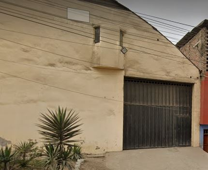
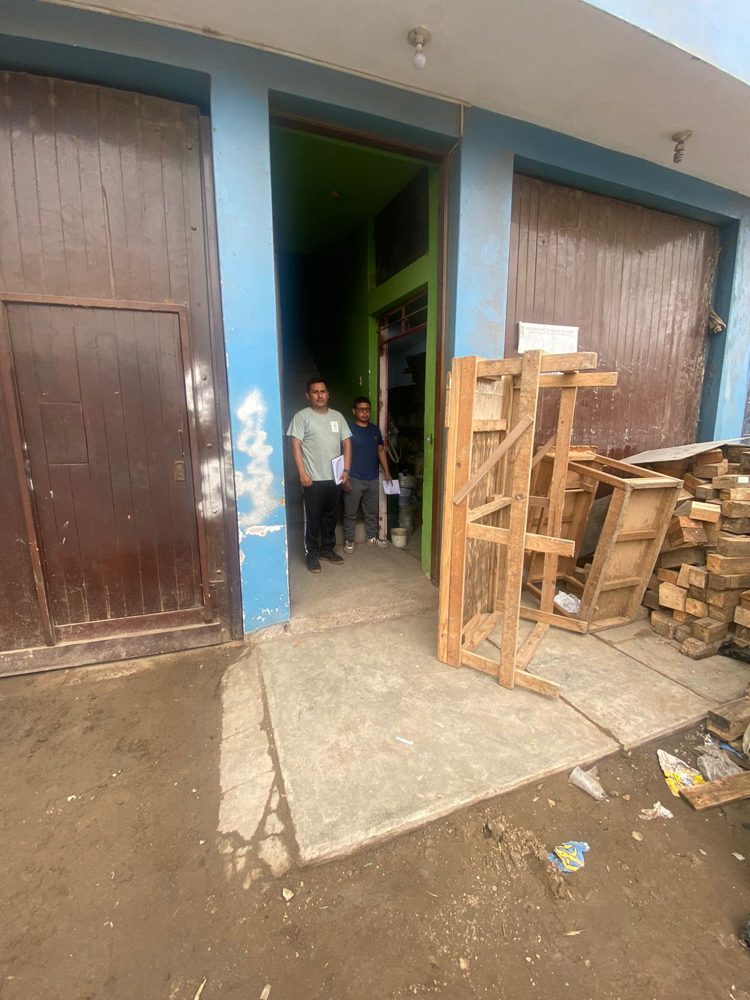
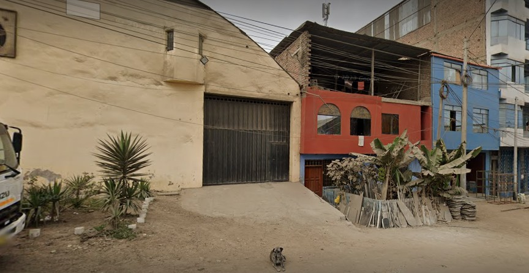
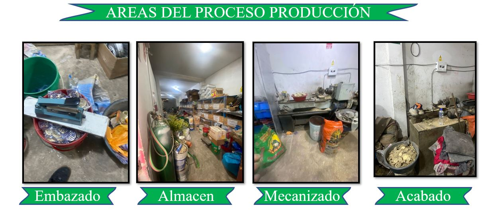

LA EMPRESA
Quienes somos?
La empresa Sumideros Z&G es una empresa peruana, que se fundó en el año 2017 y está ubicada e el departamento de Lima, distrito Villa el Salvador Ca. 5, Villa EL Salvador 15842,con un area de 600 m², esta se especializa en fabricación de sumideros, trampa campana, tapón con Jebe, tapón rejilla y Sumideros mixtos en bronce y cromado, cuenta con 16 empleados que laboran en la empresa. Esta se fundó en el año 2017, en su inicio fue emprendimiento de parte de la señora Zulma Romaní la cual de a pocos fue creciendo hasta convertirse en lo que es hoy.
  
Tipo de actividad:
Según la clasificación nacional de actividades económicas, Sumideros Z&G se encuentra en sector de manufactura de productos derivados del metal.
Rubro
El rubro en que se encuentra la empresa Sumideros Z&G es el de Manufactura de productos metalicos del subsector de fabricación de productos derivados del metal.Aunque el término "fabricación de metales" puede utilizarse para referirse a una multitud de procesos diferentes.Todos estos procedimientos distintos tienen algo en común. Todos ellos implican tomar el metal y darle nueva forma o moldearlo para convertirlo en otra cosa. En otras palabras, la fabricación de metales consiste en dar forma y diseñar un producto metálico de acuerdo con unas especificaciones predeterminadas. No es una definición muy específica, por supuesto, pero así es como debe ser. La fabricación de metales es una industria muy amplia que produce una increíble gama de productos diferentes y utiliza una amplia selección de subprocesos diferentes para que esto suceda.
NUESTRA RAZÓN DE SER
Misión
Somos una empresa dedicada a la elaboración de productos de griferías a nivel nacional, enfocados en satisfacer la necesidad de productos de buena calidad, distribuyendo a otras empresas mayoristas, supermercados y minoristas para la adquisición del consumidor final. .
Visión
Consolidarnos como una Empresa líder en la Fabricación , que satisfaga los requerimientos de nuestros clientes alcanzando el liderazgo y reconocimiento en el mercado de la región, como el más grande productor de productos de griferías, sobre las bases de calidad y servicio hacia nuestros clientes y lograr la fidelidad de los mismos mediante la oferta de una excelente relación precio-valor. Lograr niveles superiores de excelencia en todas las actividades de la empresa, incluyendo el tratamiento responsable del medio ambiente.
Principios de la empresa
Compromiso: ser capaces de satisfacer y superar las exigencias de los clientes, con eficiencia, calidad, tiempo y en la forma requerida por las especificaciones técnicas y preservando el medio ambiente.
Lealtad: nuestro negocio se basa en relaciones de largo plazo con nuestros clientes, proveedores y personal.
Integridad: privilegiando los intereses y la confidencialidad de la información de nuestros clientes, cuidando a nuestro personal y respetando las normativas legales.
Solidaridad: Apoyo y cooperación con la Comunidad.
Respeto: aceptamos las características individuales de nuestros semejantes, comprendemos nuestras limitaciones y las de otros.
Valores de la empresa :
Integridad: Ser honesto, consecuente con tus accionesy fiel a tus principios éticos.
Transparencia: Ser auténtico y confiable.
Empatía: El trabajo en equipo siempre trae grandes resultados .
Respeto: Valorar a las personas y reconocer sus méritos.
UBICACION GEOGRAFICA
OBJETIVOS
Justificación
En la actualidad, las empresas se centran en una mejora constante para mantener su competitividad, considerando tanto la calidad de su servicio como los procedimientos internos que la conforman, con el objetivo de aumentar sus ganancias. Por lo tanto, el objetivo principal de este proyecto es optimizar la gestión logística en la empresa Sumideros Z&G, ya que representa uno de los desafíos más significativos para la organización, dado que involucra diversas funciones clave que impactan en la eficiencia operativa y en la calidad del servicio ofrecido, lo que conlleva a una reducción de su rentabilidad.No solamente la empresa es la beneficiada con este plan de mejora, sino que también los clientes ya que siendo eficientes con los servicios por los cuales fue contratada la empresa,los clientes se benefiaran con la entrega puntual y la precisión en la entrega los cuales son factores clave para la satisfacción del mismo. Al mejorar nuestro sistema logístico, podemos garantizar entregas más rápidas y precisas, lo que a su vez aumentará la satisfacción del cliente y fortalecerá la fidelidad a nuestra marca. aumento del rendimiento por parte de los colaboradores. Además, este trabajo nos proporcionara la oportunidad de profundizar en los conocimientos adquiridos durante nuestra formación profesional y servirá como una valiosa fuente de información para futuras investigaciones relacionadas con la gestión logística y la rentabilidad empresarial.
Objetivo General
Proponer mejoras en la gestión logística a fin de incrementar la rentabilidad de la empresa de Sumideros Z&G
Objetivos Especificos
-Realizar un diagnóstico de la gestión logística en relación a la
rentabilidad en la empresa Sumideros Z&G.
-Diseñar estrategias de mejora en la gestión logística.
-Calcular el beneficio-costo de la propuesta de implementación
-Evaluación de Rendimiento estableciendo KPIs (Indicadores Clave de Rendimiento)
ORGANIGRAMA
CRONOGRAMA
DIAGRAMA
RESUMEN DEL AVANCE DEL DIAGNOSTICO
Para nuestro caso, nos apersonamos directamente ,esto habiendo recibido la carta de presentación dada por la universidad ,esta se nos entrego en la fecha 14/09/2023 .
Fecha de la visita: 16/09/2023
logrando contactar con el encargado del área de marketing Edil Campos .
Resultado de contacto:
Se logro obtener cierta información esto debido algunos temas de tiempo por parte del encargado y cierta desconfianza.
Información obtenida:
-Breve información de la empresa
-Áreas de la empresa y Organigrama
-Proceso de producción y algunas fotos de las áreas.
Observaciones:
-No se tenia mucha noción sobre las labores de los trabajadores en cada área ni los nombres de cada uno.
-No existía un organigrama establecido porque según se están organizando aun, pero indicamos uno aproximado.
-No tenían visión, misión y valores los creamos a partir de lo comentado por parte del encargado el cual tenia una idea.
-Los trabajadores son algo reacios a contestar por el momento.
-El proceso logístico no fue detallado y fue algo impreciso, pero dimos sugerencias para su mejora

PRODUCTOS
PROCESOS OPERATIVOS
CADENA DE ABASTECIMIENTO
JUSTIFICACIÓN
En la elección del tema " Mejora del sistema logístico de la empresa la empresa Sumideros Z&G, ubicada en el distrito de Villa El Salvador", en beneficio del ODS 9,11 Y 12, se justifica a través de diversos factores clave: Compromiso con la Sostenibilidad (ODS 9): El ODS 9, "Industria, innovación e infraestructura", busca transformar positivamente las cadenas de suministro y consumo hacia prácticas más sostenibles. La reorganización de Sumideros Z&G se traducirá en la reducción de residuos sólidos, contribuyendo directamente al ODS 9 al disminuir la generación de desechos y mejorar la infraestructura mediante una distribución de áreas adecuada para un control más efectivo de insumos y. Con respecto al ODS 11 "Ciudaddes y comunidades sostenibles", nos enfocaremos en el diseño de infraestructuras logísticas sostenibles y resilientes. Esto implica la creación de espacios y procesos que minimicen el impacto ambiental, reduzcan las emisiones de carbono y mejoren la movilidad, contribuyendo así a la creación de ciudades y comunidades más sostenibles y habitables. Adicionalmente, en consonancia con el ODS 12 "producción y consumo responsable", nos comprometemos a optimizar nuestro sistema logístico mediante la promoción de prácticas de producción y consumo responsables. Investigaremos y aplicaremos estrategias para reducir desperdicios, minimizar la huella ecológica y fomentar la adopción de prácticas empresariales sostenibles.
Impacto Ambiental Positivo: La gestión inadecuada de residuos sólidos puede tener consecuencias negativas en el medio ambiente, como la contaminación del suelo y del agua. La implementación de un sistema eficiente en la línea de producción de Sumideros Z&G ayudará a mitigar estos impactos y fomentará prácticas empresariales responsables.
Cumplimiento Normativo y Reputación Empresarial: Desarrollar un sistema eficiente en la producción asegurará que Sumideros Z&G cumpla con las normativas locales y nacionales, evitando sanciones y mejorando su reputación en términos de responsabilidad empresarial e inocuidad. Esto también generará responsabilidad en la comunidad de Villa El Salvador.
Reducción de Costos Asociados a Residuos: La reducción de residuos implica un menor gasto en materiales reutilizables, como las virutas de bronce, cajas y bolsas de plástico, lo que se traduce en menores costos asociados con la gestión y eliminación de desechos. Esto no solo beneficia a la empresa en términos financieros, sino que también contribuye a la responsabilidad social en la comunidad.
Mejora de distribucion:El ubicar en su justo sitio maquinas, herramientas y accesorios; el dar entrada y salida racionales a las materias y productos antes, durante y después de subproceso en planta, pasando desde los almacenes de materias a los departamentos de depósito, embalaje y expedición, y el lograr, en definitiva, que las operaciones propias de la actividad industriales produzcan con mínimos movimientos de materiales y de hombres, exige unos conocimientos técnicos y una preparación de vital importancia para la empresa.
CRONOGRAMA DE OBJETIVOS Y ACTIVIDADES
DIAGRAMA GANTT
PRESUPUESTO DE LAS ACTIVIDADES REALIZADAS
INFORME DE LAS ACTIVIDADES DEL PLAN